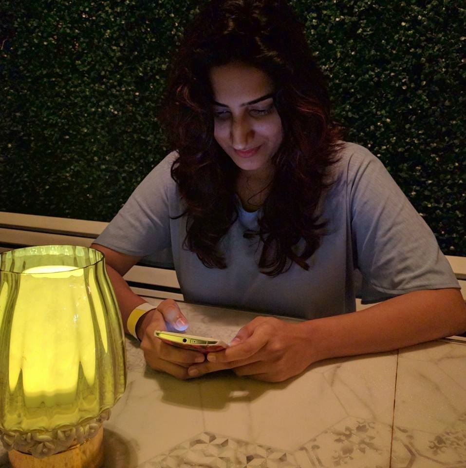

Currently,I am pursuing Masters in Computer Science in Stevens Institute Of Technology.I pursued my Bachelors of Technology in Information Technology (B.E) from Vidyalankar Institute of Technology, Mumbai University.I have had an exciting time in engineering learning about different technologies and researching new things. With Enthusiasim and passion for programming and machine learning, I love developing new projects and ideas. I love taking up new challenges and giving my best in what I do.
My hobbies are listening to Trance music and reading books.
- Stevens Institute Of Technology| Masters Of Science in Computer Science
- 2017-2018
- Vidyalankar Institute of Technology | B.E.Information Technology
- 2011-2015
- Java | Python | C++
- HTML | CSS | JavaScript | PHP
- Servlets | JSP
- Frameworks
- Struts | Hibernate | Spring
Provost Master's Fellowship Award 2017